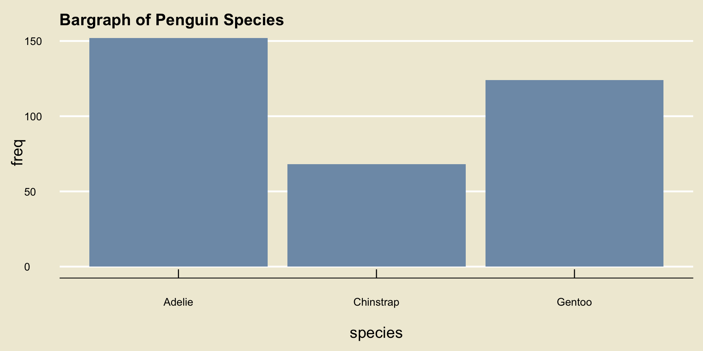
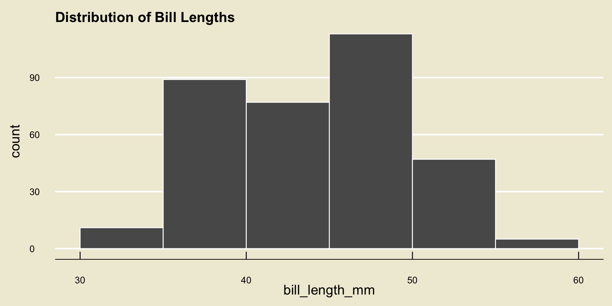
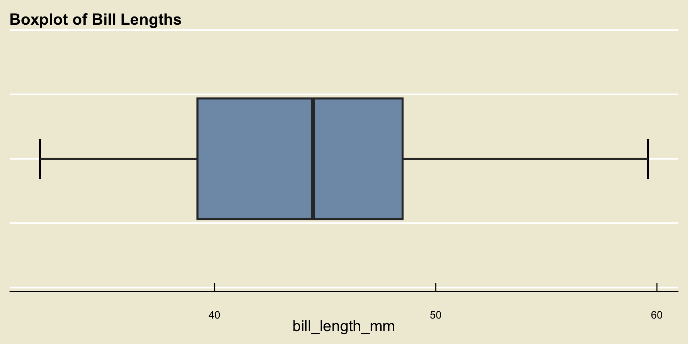
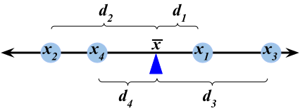
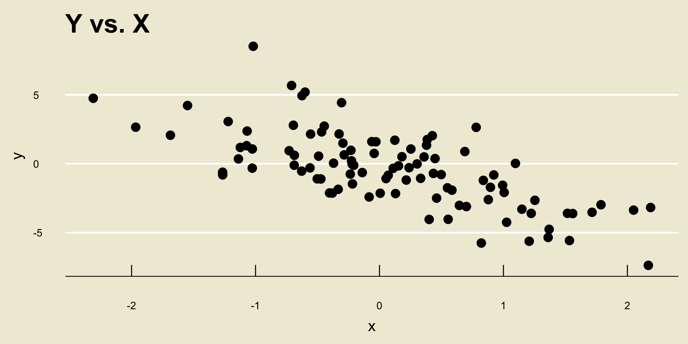
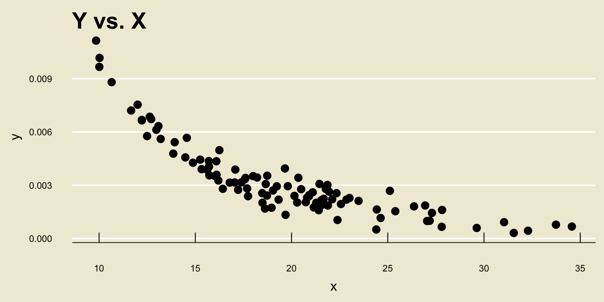
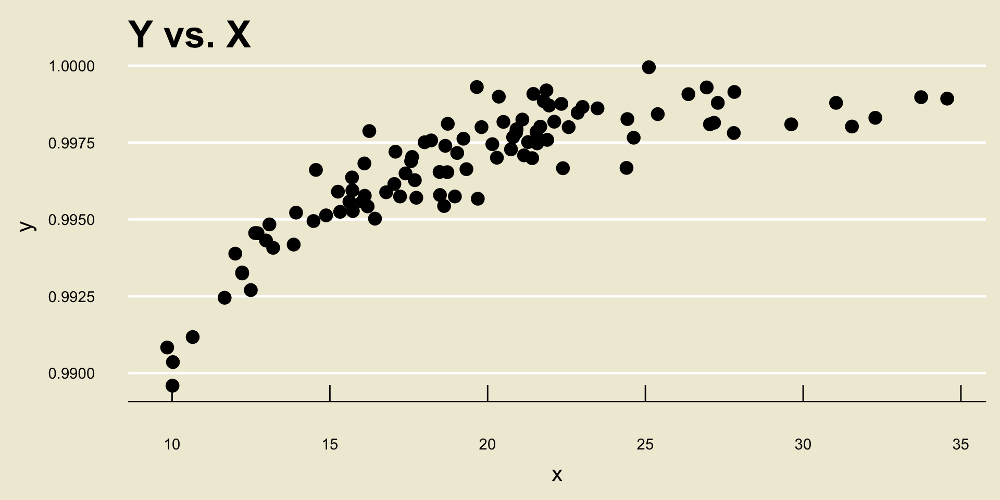
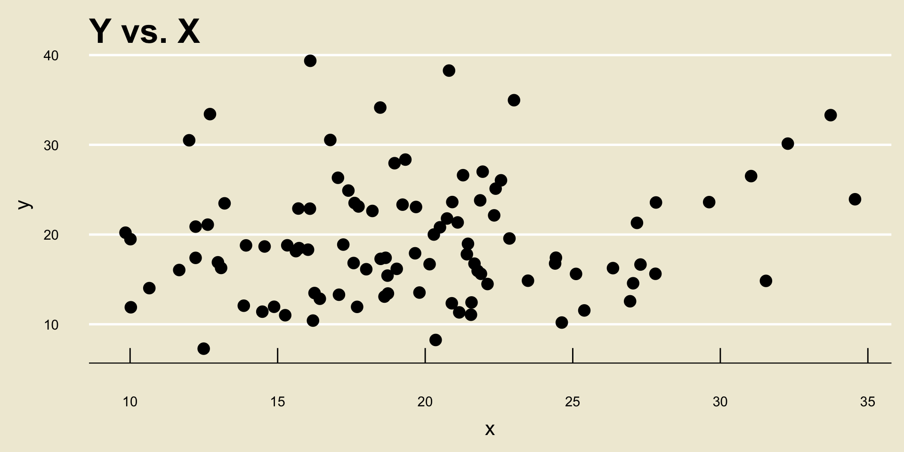
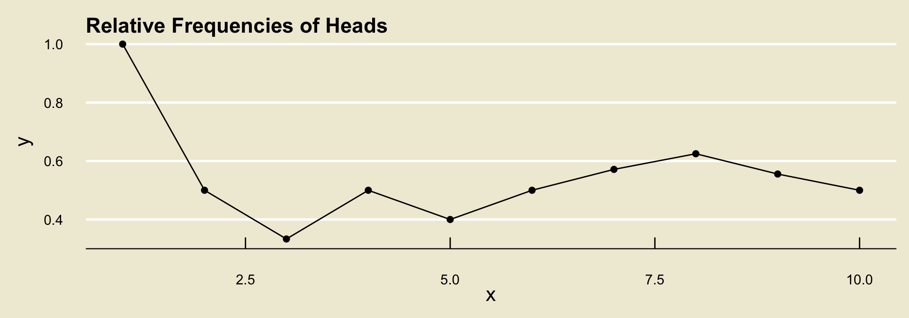

species island bill_length_mm bill_depth_mm flipper_length_mm body_mass_g
1 Adelie Torgersen 39.1 18.7 181 3750
2 Adelie Torgersen 39.5 17.4 186 3800
3 Adelie Torgersen 40.3 18 195 3250
4 Adelie Torgersen NA NA NA NA
5 Adelie Torgersen 36.7 19.3 193 3450
6 Adelie Torgersen 39.3 20.6 190 3650
7 Adelie Torgersen 38.9 17.8 181 3625
8 Adelie Torgersen 39.2 19.6 195 4675
9 Adelie Torgersen 34.1 18.1 193 3475
10 Adelie Torgersen 42 20.2 190 4250
# ℹ 334 more rows
# ℹ 2 more variables: sex <fct>, year <int>PSTAT 5A: Review 1
Overview of Weeks 1 and 2
Annie Adams
2025-08-14
Descriptive Statistics
Structure of Data
- We started by talking about the structure of data.
- We were exposed to the notion of a data frame, which is comprised of a series of observational units (i.e. rows) on a series of variables (i.e. columns)
- For instance, the
palmerpenguinsdata frame is:
Structure of Data
- Of course, the reader is not expected to a priori know what the variables in a dataset represent; as such, most datasets come equipped with a data dictionary that lists out the variables included in the dataset along with a brief description of each.
| Variable | Description |
|---|---|
species |
The species of penguin (either Adelie, Chinstrap, or Gentoo) |
island |
The island on which the penguin was found (either Biscoe, Dream, or Torgersen) |
bill_length_mm |
The length (millimeters) of the penguin’s bill |
bill_depth_mm |
The depth (in millimeters) of the penguin’s bill |
flipper_length_mm |
The length (in millimeters) of the penguin’s flipper |
body_mass_g |
The mass (in grams) of the penguin |
sex |
The sex of the penguin (either Male or Female) |
year |
The year in which the penguin was observed |
Classification of Variables
- We also saw that variables fall into two main types: numerical and categorical.
- Remember that it is not enough to simply check whether our data is comprised of numbers, as categorical data can be encoded using numbers (e.g. months in a year).
- Rather, we should check whether it makes interpretable sense to add two elements in our variable (e.g.
1+2is3, whereasJan+Febis notMarch).
Classification of Variables
Within numerical data, we have a further subdivision into discrete and continuous variables.
- The set of possible values of a discrete variable has jumps, whereas the set possible values of a continuous variable has no jumps.
Within categorical data, we have a further subdivision into ordinal , nominal, and binary variables.
- Ordinal variables have a natural ordering (e.g. letter grades, months of the year, etc.) whereas nominal variables do not (e.g. favorite color). Binary variables are a special case of nominal variables with exactly two categories.
Full Classification Scheme

Visualization
Once we have classified a variable as being either numerical or categorical, we can ask ourselves: how can we best visualize this variable?
For categorical data, we use a bargraph and for numerical data we use either a histogram or a boxplot.
Bargraph

Histogram

- Remember the importance of binwidth: demo
Boxplot

- Remember that the whiskers are never allowed to extend beyond 1.5 times the IQR (and recall that the IQR is just the width of the box).
Numerical Summaries
- We can also produce numerical summaries of numerical variables.
- Measures of Central Tendency are different quantities that summarize the “center” of a variable
- There are two main measures of central tendency we discussed: the mean and the median.
The Mean
- The mean (or arithmetic mean) is a sort of “balancing point”:
\[ \overline{x} = \frac{1}{n} \sum_{i=1}^{n} x_i \]
- Also recall our discussion on data aggregation, and how the incorporation of new data changes the mean.
Spread
Another way we could summarize a numerical dataset (i.e. a dataset containing only one variable, one that is numerical) is to describe how “spread out” the values are.
The variance is a sort of “average distance of points to the mean”:

\[ s_x^2 = \frac{1}{n - 1} \sum_{i=1}^{n} (x_i - \overline{x})^2 \]
- The standard deviation is just the square root of the variance
Spread
The interquartile range (IQR) is another measure of spread: \[ \mathrm{IQR} = Q_3 - Q_1 \] where \(Q_1\) and \(Q_3\) denote the first and third quartiles, respectively.
Recall that the \(p\)th percentile of a dataset \(X\) is the value \(\pi_{x, \ 0.5}\) such that p% of observations lie to the left of (i.e. are less than) \(\pi_{x, \ 0.5}\).
\(Q_1\) is the 25th percentile and \(Q_3\) is the 75th percentile
The third measure of spread we discussed is the range: \[ \mathrm{range}(X) = \max\{x_1, \cdots, x_n\} - \min\{x_1, \ \cdots, \ x_n\} \]
5-Number Summary
Recall the five number summary, which contains:
- The minimum
- The first quartile
- The median
- The third quartile
- The maximum
Also recall how all of these quantities appear on a boxplot!
Comparisons of Variables
- If we want to compare two variables, there are three cases to consider:
- Numerical vs. Numerical
- Numerical vs. Categorical
- Categorical vs. Categorical
- When comparing two numerical variables, we use a scatterplot
- When comparing a numerical variable to a categorical variable, we use a side-by-side boxplot
- When comparing two categorical variables, we construct a contingency table
- Linear Negative Trend:

- Nonlinear Negative Trend:

- Nonlinear Positive Trend:

- No Discernable Trend

Probability
Basics of Probability
- Probability is, in many ways, the language of uncertainty.
- An experiment is any procedure we can repeat an infinite number of times, where each time we repeat the procedure the same fixed set of “things” can occur
- These “things” are called outcomes
- The outcome space, denoted \(\Omega\), is the set containing all outcomes associated with a particular experiment.
- Events are just subset of the outcome space.
- We can express outcome spaces using tables or trees.
Probability
- Probability is a function that acts on events
- Notationally: \(\mathbb{P}(E)\)
- There are two main approaches to computing probabilities:
- The Classical Aproach: if outcomes are equally likely, then for any event \(E\) \[ \mathbb{P}(E) = \frac{\#(E)}{\#(\Omega)} \]
- The long-run [relative] frequency approach: repeat the experiment an infinite number of times and define \(\mathbb{P}(E)\) to be the proportion of times \(E\) occurs
Long-Run Frequencies Example
| Toss | 1 | 2 | 3 | 4 | 5 | 6 | 7 | 8 | 9 | 10 |
|---|---|---|---|---|---|---|---|---|---|---|
| Outcome | H |
T |
T |
H |
T |
H |
H |
H |
T |
T |
Raw freq. of H |
1 | 1 | 1 | 2 | 2 | 3 | 4 | 5 | 5 | 5 |
Rel. freq of H |
1/1 | 1/2 | 1/3 | 2/4 | 2/5 | 3/6 | 4/7 | 5/8 | 5/9 | 5/10 |

Set Operations
- Given two events \(E\) and \(F\), there are several operations we can perform:
- Complement: \(E^\complement\); denotes “not \(E\)”
- Union: \(E \cup F\); denotes \(E\) or \(F\) (or both)
- Intersection: \(E \cap F\); denotes \(E\) and \(F\)
Axioms of Probability
\(\mathbb{P}(E) \geq 0\) for any event \(E\)
\(\mathbb{P}(\Omega) = 1\)
For disjoint events \(E\) and \(F\) (i.e. for \(E \cap F = \varnothing\)), \(\mathbb{P}(E \cup F) = \mathbb{P}(E) + \mathbb{P}(F)\)
Probability Rules
Probability of the Empty Set: \(\mathbb{P}(\varnothing) = 0\)
Complement Rule: \(\mathbb{P}(E^\complement) = 1 - \mathbb{P}(E)\)
Addition Rule: \(\mathbb{P}(E \cup F) = \mathbb{P}(E) + \mathbb{P}(F) - \mathbb{P}(E \cap F)\)
Conditional Probabilities
\(\mathbb{P}(E \mid F)\) denotes an “updating” of our beliefs on \(E\) in the presence of \(F\))
- Definition: \(\displaystyle \mathbb{P}(E \mid F) = \frac{\mathbb{P}(E \cap F)}{\mathbb{P}(F)}\), provided \(\mathbb{P}(F) \neq 0\)
Multiplication Rule: \(\mathbb{P}(E \cap F) = \mathbb{P}(E \mid F) \cdot \mathbb{P}(F) = \mathbb{P}(F \mid E) \cdot \mathbb{P}(E)\)
Bayes’ Rule: \(\displaystyle \mathbb{P}(E \mid F) = \frac{\mathbb{P}(F \mid E) \cdot \mathbb{P}(E)}{\mathbb{P}(F)}\)
Law of Total Probability: \(\mathbb{P}(F) = \mathbb{P}(F \mid E) \cdot \mathbb{P}(E) + \mathbb{P}(F \mid E^\complement) \cdot \mathbb{P}(E^\complement)\)
Independence
- Independence asserts that \(\mathbb{P}(E \mid F) = \mathbb{P}(E)\), which in turn implies \(\mathbb{P}(F \mid E) = \mathbb{P}(F)\) and \(\mathbb{P}(E \cap F) = \mathbb{P}(E) \cdot \mathbb{P}(F)\)
- Note that \(\mathbb{P}(E \cap F) = \mathbb{P}(E) \cdot \mathbb{P}(F)\) only when \(E\) and \(F\) are independent! Otherwise, you have to compute \(\mathbb{P}(E \cap F)\) using the multiplication rule.
- The interpretation of independence is that the two events “do not affect each other”
Random Variables
Basics of Random Variables
Recall long ago we discussed the notion of an experiment: any procedure we can repeat an infinite number of times where each time we repeat the experiment the same fixed set of things (i.e. the outcomes) can occur.
A random variable, loosely speaking, is some sort of numerical variable that keeps track of certain quantities relating to an experiment.
For example, if we toss 7 coins and let \(X\) denote the number of heads we observe in these 7 coin tosses, then \(X\) would be a random variable.
The set of all values a random variable can attain is called the state space, and is denoted \(S_X\).
We classify random variables based on their state space:
- If \(S_X\) has jumps, we say \(X\) is a discrete random variable
- If \(S_X\) does not have jumps, we say \(X\) is a continuous random variable
Discrete Random Variables
Discrete random variables are described/summarized by a probability mass function (p.m.f.), which is a specification of the values the random variable can take (i.e. the state space) along with the probabilities with which the random variable attains those values.
P.M.F.’s are often displayed in tabular form: e.g. \[ \begin{array}{r|cccc} \boldsymbol{k} & -1 & 0 & 1 & 2 \\ \hline \boldsymbol{\mathbb{P}(X = k)} & 0.1 & 0.2 & 0.3 & 0.4 \end{array}\]
Note that the probability values in a P.M.F. must sum to 1.
Quantities like \(\mathbb{P}(X \leq k)\) are found by summing up the values of \(\mathbb{P}(X = x)\) for all values of \(x\) in the state space that are less than \(k\).
- For example, in the example above, \[\mathbb{P}(X \leq 0.5) = \mathbb{P}(X = -1) + \mathbb{P}(X = 0) = 0.1 + 0.2 = 0.3 \]
Expected Value
The expected value of a random variable \(X\), denoted \(\mathbb{E}[X]\), represents a sort of “average” of \(X\), and is computed as \[ \mathbb{E}[X] = \sum_{\text{all $k$}} k \cdot \mathbb{P}(X = k) \]
Again, don’t be scared by the sigma notation! It just represents a sum.
So, for example, using our P.M.F. from the previous slide, \[\begin{align*} \mathbb{E}[X] & = (-1) \cdot \mathbb{P}(X = -1) + (0) \cdot \mathbb{P}(X = 0) \\ & \hspace{10mm} + (1) \cdot \mathbb{P}(X = 1) + (2) \cdot \mathbb{P}(X = 2) \\[3mm] & = (-1) \cdot (0.1) + (0) \cdot (0.2) + (1) \cdot (0.3) + (2) \cdot (0.4) \\[3mm] & = \boxed{1} \end{align*}\]
Variance and Standard Deviation
There are two formulas we can use for the variance of a random variable \(X\): \[ \mathrm{Var}(X) = \sum_{\text{all $k$}} (k - \mathbb{E}[X])^2 \cdot \mathbb{P}(X = k) \] or \[ \mathrm{Var}(X) = \left(\sum_{\text{all $k$}} k^2 \cdot \mathbb{P}(X = k) \right) - (\mathbb{E}[X])^2 \]
The standard deviation of a random variable is simply the square root of the variance: \[ \mathrm{SD}(X) = \sqrt{\mathrm{Var}(X)} \]
Variance and Standard Deviation
- For example, using the PMF from a few slides ago, the first formula for variance tells us to compute \[\begin{align*} \mathrm{Var}(X) & = \sum_{\text{all $k$}} (k - \mathbb{E}[X])^2 \cdot \mathbb{P}(X = k) \\ & = (-1 - 1)^2 \cdot \mathbb{P}(X = -1) + (0 - 1)^2 \cdot \mathbb{P}(X = 0) \\ & \hspace{10mm} + (1 - 1)^2 \cdot \mathbb{P}(X = 1) + (2 - 1)^2 \cdot \mathbb{P}(X = 2) \\[3mm] & = (-1 - 1)^2 \cdot (0.1) + (0 - 1)^2 \cdot (0.2) \\ & \hspace{10mm}+ (1 - 1)^2 \cdot (0.3) + (2 - 1)^2 \cdot (0.4) \\[3mm] & = \boxed{1} \end{align*}\]
Variance and Standard Deviation
- Using the second formula for variance, we first compute \[\begin{align*} \sum_{\text{all $k$}} k^2 \mathbb{P}(X = k) & = (-1)^2 \cdot \mathbb{P}(X = -1) + (0)^2 \cdot \mathbb{P}(X = 0) \\ & \hspace{10mm} + (1)^2 \cdot \mathbb{P}(X = 1) + (2 - 1)^2 \cdot \mathbb{P}(X = 2) \\[3mm] & = (-1)^2 \cdot (0.1) + (0)^2 \cdot (0.2) \\ & \hspace{10mm}+ (1)^2 \cdot (0.3) + (2)^2 \cdot (0.4) \\[3mm] & = 2 \end{align*}\] which means \[ \mathrm{Var}(X) = 2 - (1)^2 = \boxed{1}\]
Binomial Distribution
Suppose we have \(n\) independent trials, each resulting in “success” with probability \(p\) and “failure” with probability \(1 - p\). If \(X\) denotes the number of successes in these \(n\) trials, we say \(X\) follow the Binomial distribution with parameters \(n\) and \(p\), notated \[ X \sim \mathrm{Bin}(n, \ p) \]
If \(X \sim \mathrm{Bin}(n, \ p)\), then:
- \(S_X = \{0, 1, 2, \cdots, n\}\)
- \(\mathbb{P}(X = k) = \binom{n}{k} p^k (1 - p)^{n - k}\)
- \(\mathbb{E}[X] = np\)
- \(\mathrm{Var}(X) = np(1 - p)\)
Binomial Distribution
In order to verify that the Binomial distribution is appropriate to use, we need to check the Binomial Criteria:
- Independence across trials
- Fixed number \(n\) of trials
- Well-defined notion of “success” and “failure”
- Fixed probability \(p\) of success across trials.
If you are going to use the Binomial distribution in a problem, you must check all four of these!